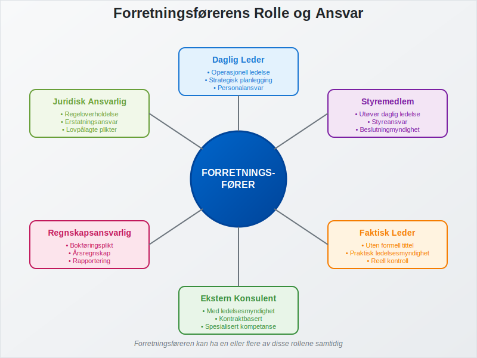
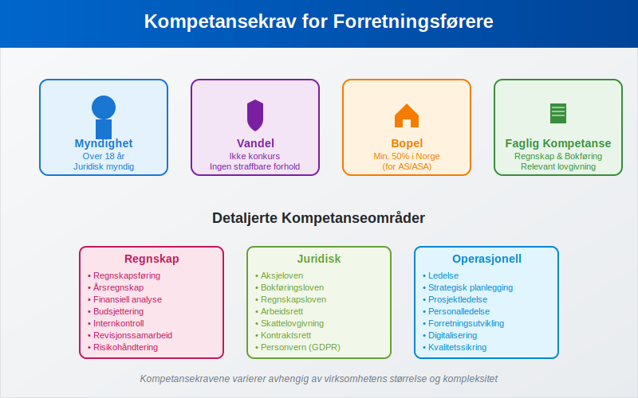
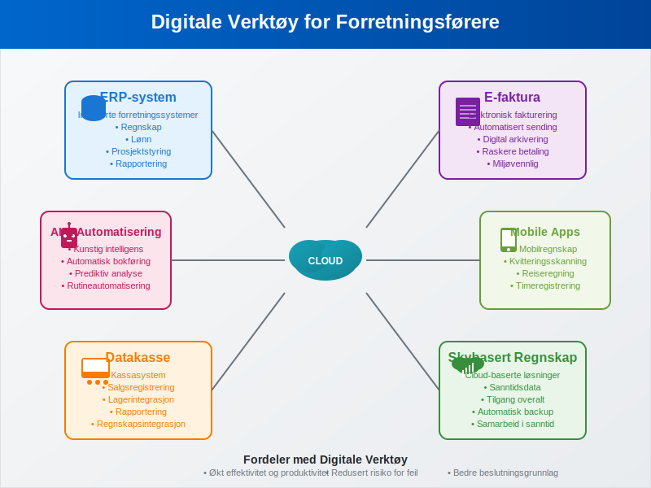

En forretningsfører er en person som har det daglige ansvaret for å drive en virksomhet på vegne av eierne. I norsk rett er forretningsføreren en sentral figur som kombinerer operasjonelt ledelsesansvar med juridiske forpliktelser. Denne artikkelen gir en omfattende gjennomgang av forretningsførerens rolle, ansvar og krav i det norske næringslivet.
Seksjon 1: Juridisk Definisjon og Grunnlag
1.1 Lovgrunnlag
Forretningsførerens rolle er regulert i flere lover, avhengig av selskapsformen:
- Aksjeloven - for aksjeselskaper (AS)
- Allmennaksjeloven - for allmennaksjeselskaper (ASA)
- Selskapsloven - for ansvarlige selskaper og kommandittselskaper
1.2 Definisjon av Forretningsfører
En forretningsfører er definert som den som faktisk leder virksomheten på vegne av selskapet. Dette innebærer ikke bare formell utnevnelse, men også praktisk utøvelse av ledelsesmyndighet. Forretningsføreren kan være:
- Daglig leder
- Styremedlem som utøver daglig ledelse
- Faktisk leder uten formell tittel
- Ekstern konsulent med ledelsesmyndighet

Seksjon 2: Utnevnelse og Kompetansekrav
2.1 Utnevnelsesprosess
Utnevnelse av forretningsfører følger spesifikke prosedyrer avhengig av selskapsform:
| Selskapsform | Utnevnelsesmyndighet | Registrering |
|---|---|---|
| Aksjeselskap (AS) | Styret | Foretaksregisteret |
| Allmennaksjeselskap (ASA) | Styret | Foretaksregisteret |
| Ansvarlig selskap | Deltakerne | Foretaksregisteret |
| Kommandittselskap | Komplementarene | Foretaksregisteret |
2.2 Kompetansekrav
Norsk lov stiller spesifikke krav til forretningsførere:
- Myndighet: Må være myndig (over 18 år)
- Vandel: Ikke være konkurs eller ha begått straffbare handlinger som gjør vedkommende uskikket
- Bopel: For aksjeselskaper må minst halvparten av forretningsførerne være bosatt i Norge
- Faglig kompetanse: Må ha nødvendig kunnskap om regnskap, bokføring og relevant lovgivning

Seksjon 3: Ansvarsområder og Oppgaver
3.1 Daglig Drift
Forretningsførerens primære ansvar omfatter:
- Operasjonell ledelse: Daglig drift av virksomheten
- Personalansvar: Ansettelse, oppsigelse og ledelse av ansatte
- Økonomisk styring: Budsjett, likviditetsstyring og investeringsbeslutninger
- Strategisk planlegging: Utvikling av forretningsstrategier
3.2 Regnskapsmessige Forpliktelser
Forretningsføreren har omfattende ansvar for selskapets regnskapsføring:
- Bokføringsplikt: Sikre korrekt og løpende bokføring
- Bilagsbehandling: Systematisk håndtering av regnskapsbilag
- Årsregnskap: Utarbeidelse av årsregnskap i henhold til regnskapslovgivningen
- Revisjonssamarbeid: Samarbeid med revisor ved revisjon
3.3 Rapporteringsansvar
Forretningsføreren må sikre korrekt rapportering til offentlige myndigheter:
- A-melding: Månedlig rapportering av lønn og arbeidsgiveravgift
- MVA-melding: Rapportering av merverdiavgift
- Årsoppgave: Årlig skatteoppgave for selskapet
- Altinn-rapportering: Digital kommunikasjon med offentlige myndigheter

Seksjon 4: Juridisk Ansvar og Erstatning
4.1 Erstatningsansvar
Forretningsføreren kan holdes personlig ansvarlig for skader som oppstår som følge av:
- Brudd på lovgivning
- Uaktsom eller forsettlig handling
- Manglende oppfyllelse av lovpålagte plikter
- Skade på selskapet, aksjonærer eller tredjeparter
4.2 Straffansvar
I alvorlige tilfeller kan forretningsføreren straffeforfølges for:
- Regnskapsbrudd: Brudd på bokføringsloven
- Skatteunndragelse: Manglende eller feilaktig skatteinnberetning
- Bedrageri: Villedende informasjon til myndigheter eller interessenter
- Konkurskriminalitet: Ulovlige handlinger i forbindelse med konkurs
4.3 Forsikring og Risikohåndtering
For å redusere personlig risiko bør forretningsførere vurdere:
- Styreansvarsforsikring: Dekker erstatningskrav mot ledelsen
- Juridisk bistand: Tilgang til juridisk rådgivning
- Compliance-systemer: Systemer for å sikre regeloverholdelse
- Internkontroll: Robuste kontrollsystemer for å forebygge feil
Seksjon 5: Forskjeller Mellom Selskapsformer
5.1 Aksjeselskap (AS)
I et aksjeselskap har forretningsføreren:
- Begrenset ansvar: Personlig ansvar kun ved uaktsomhet eller forsett
- Styreansvar: Rapporterer til styret
- Aksjekapital-ansvar: Må sikre at aksjekapitalen opprettholdes
5.2 Enkeltpersonforetak
I et enkeltpersonforetak er eieren selv forretningsfører med:
- Ubegrenset ansvar: Personlig ansvar for alle forpliktelser
- Direkte kontroll: Full kontroll over virksomheten
- Enklere struktur: Færre formelle krav
5.3 Sammenligning av Ansvarsformer
| Selskapsform | Personlig Ansvar | Kapitalkrav | Kompleksitet |
|---|---|---|---|
| Enkeltpersonforetak | Ubegrenset | Ingen | Lav |
| Ansvarlig Selskap | Ubegrenset | Ingen | Middels |
| Aksjeselskap | Begrenset | 30.000 kr | Høy |
| ASA | Begrenset | 1.000.000 kr | Svært høy |
Seksjon 6: Praktiske Retningslinjer
6.1 Beste Praksis for Forretningsførere
- Dokumentasjon: Hold detaljerte registre over alle beslutninger og handlinger
- Kompetanseutvikling: Hold deg oppdatert på relevant lovgivning og regnskapsregler
- Delegering: Deleger oppgaver til kvalifisert personell når det er hensiktsmessig
- Rådgivning: Søk profesjonell rådgivning ved usikkerhet
6.2 Vanlige Fallgruver
Forretningsførere bør unngå:
- Blanding av private og forretningsmessige midler: Kan føre til erstatningsansvar
- Manglende avstemming: Kan resultere i regnskapsfeil
- Forsømmelse av rapporteringsfrister: Kan medføre gebyrer og sanksjoner
- Utilstrekkelig internkontroll: Øker risikoen for feil og misligheter
6.3 Digitale Verktøy og Systemer
Moderne forretningsførere benytter ofte:
- ERP-systemer: Integrerte forretningssystemer
- Elektronisk fakturering: Automatisert fakturabehandling
- Skybaserte regnskapssystemer: Tilgang til sanntidsdata
- Datakasse-integrasjon: Automatisk registrering av salgstransaksjoner

Seksjon 7: Fremtidige Utviklingstrekk
7.1 Digitalisering og Automatisering
Forretningsførerens rolle endres med teknologisk utvikling:
- Kunstig intelligens: Automatisering av rutineoppgaver
- Blockchain: Økt transparens og sporbarhet
- Sanntidsrapportering: Kontinuerlig overvåking av nøkkeltall
- Prediktiv analyse: Bedre beslutningsgrunnlag
7.2 Regulatoriske Endringer
Nye krav og forskrifter påvirker forretningsførerens ansvar:
- ESG-rapportering: Miljø-, sosial- og styringsrapportering
- Cybersikkerhet: Økt fokus på datasikkerhet
- Personvern: GDPR og andre personvernregler
- Bærekraft: Krav til bærekraftsrapportering
Konklusjon
Forretningsførerens rolle er kompleks og omfattende, med betydelig juridisk og operasjonelt ansvar. Suksess krever en kombinasjon av faglig kompetanse, praktisk erfaring og kontinuerlig læring. Ved å forstå de juridiske kravene, implementere beste praksis og utnytte moderne teknologi, kan forretningsførere effektivt lede sine virksomheter samtidig som de minimerer personlig risiko.
For å lykkes som forretningsfører er det essensielt å ha solid kunnskap om regnskap, bokføring og relevant lovgivning, samt å etablere robuste systemer for internkontroll og risikohåndtering.